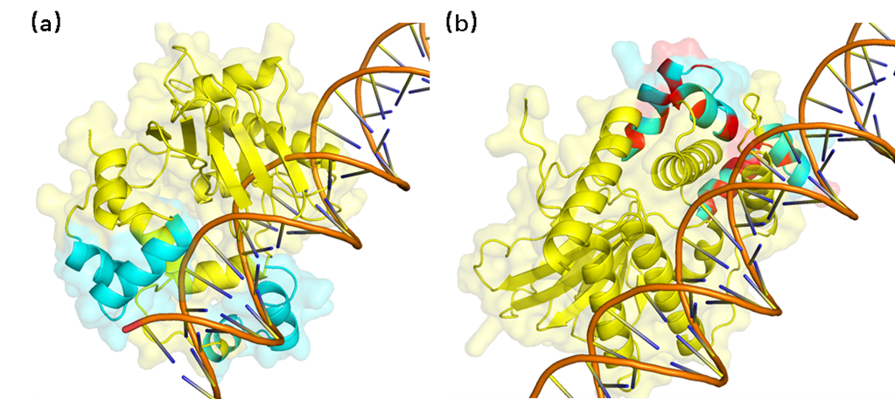
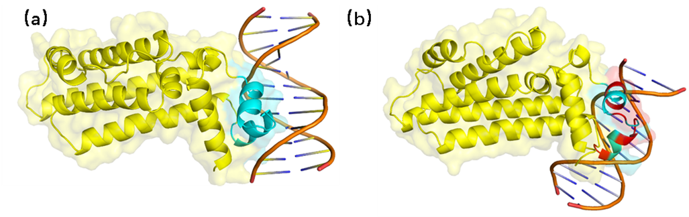
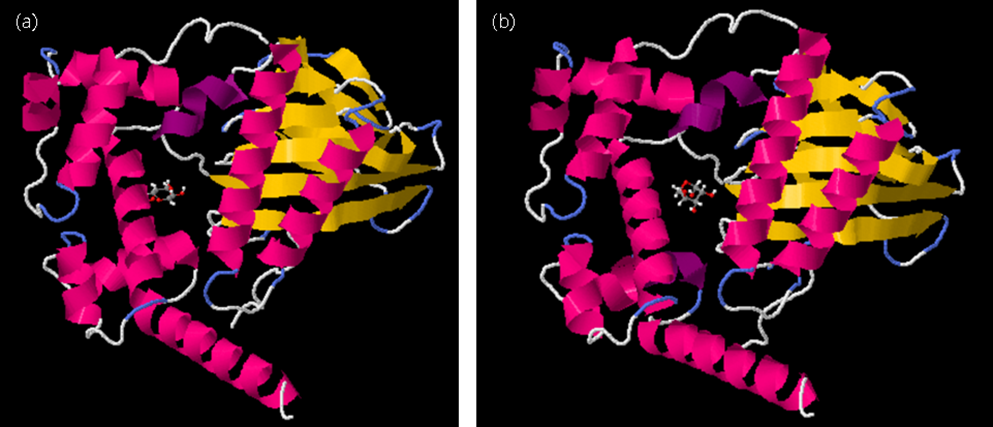
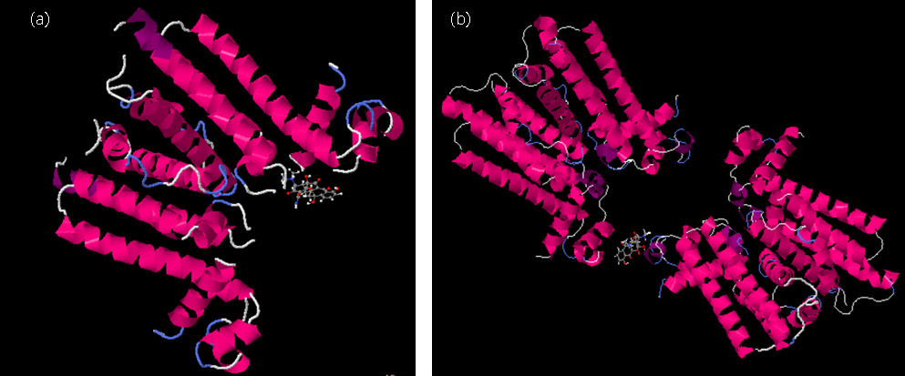

To validate the performance of the protein post-mutation, molecular docking was conducted using the simulated structures of both pre- and post-mutation AraC proteins with the araBAD promoter at positions (-144, -100) (Figure 5). Similarly, docking was
performed using the simulated structures of pre- and post-mutation TetR proteins with specific sites on the tetracycline regulatory promoter (Figure 6). The results showed that The mutant has lower docking parameters for DNA compared
to the wild type and higher binding free energy for its deterrents. This suggests a tighter binding to DNA and a lower tendency to bind to its deterrents. This suggests a theoretical reduction in manipulator leakage and a smoothing
of the change curve in the concentration of deterrents required for switching on, increasing its tunability. A comparison revealed a shift in the binding position of AraC post-mutation, although the movement was minor and is anticipated
not to impact the actual effect. This confirms the effectiveness of the model, offering a rapid and efficient method to predict and improve DNA-binding proteins. Detailed docking data has been saved in the supplementary materials.

AraC molecular docking with DNA. (a) AraC and DNA docking results before mutation (b) AraC and DNA docking results after mutation. The blue part is the DNA-binding site of the protein, the yellow part is the rest of the structure, and the red part represents
the amino acid after the mutation.

TetR molecular docking with DNA. (a) TetR and DNA docking results before mutation (b) TetR and DNA docking results after mutation. The blue part is the DNA-binding site of the protein, the yellow part is the rest of the structure, and the red part represents
the amino acid after the mutation.
|
Docking Score |
Confidence Score |
Ligand rmsd (Å) |
| AraC---DNA |
-212.02 |
0.7756 |
93.36 |
| TetR---DNA |
-214.65 |
0.7847 |
45.55 |
| AraCpro---DNA |
-222.48 |
0.8099 |
97.96 |
| TetRpro---DNA |
273.88 |
0.9226 |
95.74 |
Docking data ：Docking Score: The docking energy scores.. Confidence Score：Credibility of docking.
Ligand rmsd (Å): The ligand RMSDs from the input structures or modeled structures by homology modeling.

AraC molecular docking with arabinose. (a) AraC and arabinose docking results before mutation (b) AraC and arabinose docking results after mutation.

TetR molecular docking with tetracycline. (a) TetR and tetracycline docking results before mutation (b) TetR and tetracycline docking results after mutation.
|
Estimated ΔG (kcal/mol) |
Confidence Score |
| AraC---arabinose |
-6.79 |
-1318.70 |
| TetR---tetracycline |
-7.70 |
-2811.57 |
| AraCpro---arabinose |
-6.27 |
-1305.61 |
| TetRpro---tetracycline |
-7.45 |
-3908.49 |
Docking data：Estimated ΔG Predicted binding free energy. FullFitness Usually used to describe the overall interaction energy between two molecules, TetRpro because it is docked using the tetramer model, FullFitness may be large.